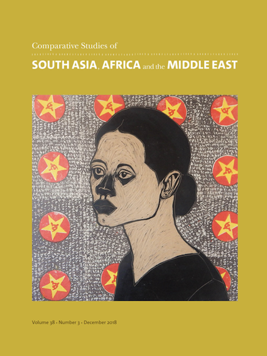

Historical Tours of "New" Lagos
Cartography and Placemaking
This article was published in the December 2018 issue of the journal of Conparative Studies of South Asia, Africa, and the Middle East in a a special issue on Lagos. Read it here.

 ABSTRACT: By the 1880s Lagos had been under British rule for just over two decades. Yet, there was lingering anxiety over its representation and perception as both a modern and urban space. Adelusi-Adeluyi’s article analyzes two contexts for the negotiation of these urban anxieties, linked to simultaneous instances of performing the future of the city. The first instance was in a procession celebrating the Wesleyan jubilee; the second was through a map of Lagos produced for the 1886 Colonial and Indian Exhibition. Lagos’s streets were the sites of these performances and the subject of the representation of the city. This article examines the spaces where the map and procession intersect, arguing that when taken together, both suggest a model for the future of Lagos as a new city imagined as modern, colonial, and Christian.

The map above tracks the morning and evening routes taken by the Wesleyan congregation, revealing inconsistencies with the way the map was drawn.